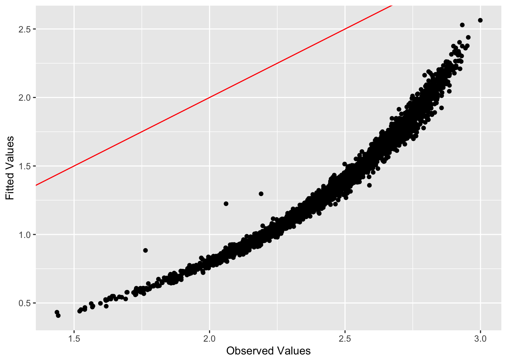
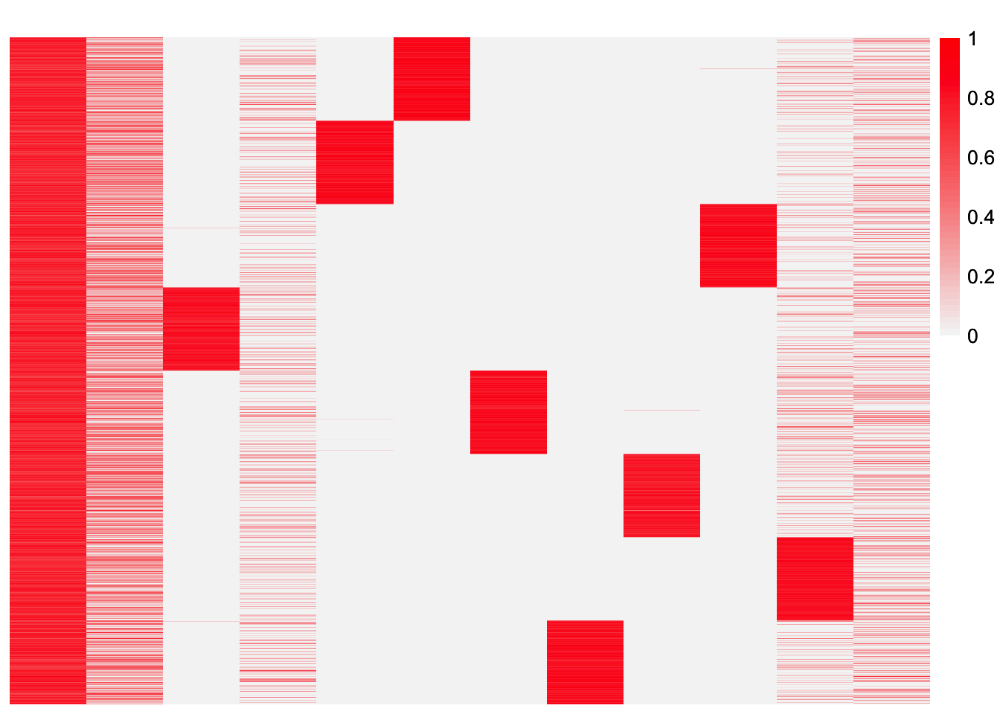

simulation-analysis
xxie6
2024-04-01
Last updated: 2024-04-11
Checks: 7 0
Knit directory: EBCD_GBCD_comparison/
This reproducible R Markdown analysis was created with workflowr (version 1.7.1). The Checks tab describes the reproducibility checks that were applied when the results were created. The Past versions tab lists the development history.
Great! Since the R Markdown file has been committed to the Git repository, you know the exact version of the code that produced these results.
Great job! The global environment was empty. Objects defined in the global environment can affect the analysis in your R Markdown file in unknown ways. For reproduciblity it’s best to always run the code in an empty environment.
The command set.seed(20240229) was run prior to running
the code in the R Markdown file. Setting a seed ensures that any results
that rely on randomness, e.g. subsampling or permutations, are
reproducible.
Great job! Recording the operating system, R version, and package versions is critical for reproducibility.
Nice! There were no cached chunks for this analysis, so you can be confident that you successfully produced the results during this run.
Great job! Using relative paths to the files within your workflowr project makes it easier to run your code on other machines.
Great! You are using Git for version control. Tracking code development and connecting the code version to the results is critical for reproducibility.
The results in this page were generated with repository version 2720470. See the Past versions tab to see a history of the changes made to the R Markdown and HTML files.
Note that you need to be careful to ensure that all relevant files for
the analysis have been committed to Git prior to generating the results
(you can use wflow_publish or
wflow_git_commit). workflowr only checks the R Markdown
file, but you know if there are other scripts or data files that it
depends on. Below is the status of the Git repository when the results
were generated:
Ignored files:
Ignored: .DS_Store
Ignored: .Rhistory
Untracked files:
Untracked: analysis/hnscc-analysis.Rmd
Note that any generated files, e.g. HTML, png, CSS, etc., are not included in this status report because it is ok for generated content to have uncommitted changes.
These are the previous versions of the repository in which changes were
made to the R Markdown (analysis/simulation-analysis.Rmd)
and HTML (docs/simulation-analysis.html) files. If you’ve
configured a remote Git repository (see ?wflow_git_remote),
click on the hyperlinks in the table below to view the files as they
were in that past version.
| File | Version | Author | Date | Message |
|---|---|---|---|---|
| Rmd | 2720470 | Annie Xie | 2024-04-11 | Add simulation analysis to project |
Introduction
The Stephens Lab has proposed two different ways of performing orthogonal matrix factorization, Generalized Binary Covariance Decomposition (GBCD) and Empirical Bayes Covariance Decomposition (EBCD). We aim to compare these two methods on simulated single cell RNA data.
Code for Simulated Data
This is the code used to create the simulated dataset. In this simulated dataset, we have one shared GEP and 8 patient effects. (This code was modified from the simulation code from the GBCD paper).
#simulation code
library(Matrix)
library(splatter)
library(scran)
library(seqgendiff)#simulate data with only patient effects
params <- readRDS("~/Documents/PhD 3/Research/EBCD/gbcd-workflow/simulations/simparams.rds")
### define the function to normalize and log transform the UMI counts
fnc_norm <- function(X){
### calculate the cell-specific library size
clusters <- quickCluster(X)
si <- calculateSumFactors(X, clusters=clusters)
### log transform and normalize single cell count data
norm.dat <- log(10*(median(si)*t(X)/si + 0.1))
}
for (iter in 1:1){
### set the seed
set.seed(iter)
### simulate a homoegenous population of cells
dat <- splatSimulate(params, batchCells = 3200, seed = iter, out.prob = 0.005, lib.loc = params@lib.loc + log(2.5))
X <- counts(dat)
gene.info <- as.data.frame(rowData(dat))
### simulate L
L <- matrix(0, nrow=ncol(X), ncol=9)
L[sample(1:nrow(L), 600, replace=FALSE), 1] <- runif(600, min=0.4, max=2)
L[1:400, 2] <- 1
L[401:800, 3] <- 1
L[801:1200, 4] <- 1
L[1201:1600, 5] <- 1
L[1601:2000, 6] <- 1
L[2001:2400, 7] <- 1
L[2401:2800, 8] <- 1
L[2801:3200, 9] <- 1
### simulate F CHECK THIS!
F <- matrix(0, nrow=nrow(X), ncol=9)
idx.gene <- sort(which(rowSums(X!=0) >= 300))
F[idx.gene[1:500], 1] <- pmax(rnorm(250, log2(3), 0.5), log2(1.5))
F[idx.gene[501:1000], 2] <- pmax(rnorm(500, log2(3), 0.5), log2(1.5))
F[idx.gene[1001:1500], 3] <- pmax(rnorm(500, log2(3), 0.5), log2(1.5))
F[idx.gene[1501:2000], 4] <- pmax(rnorm(500, log2(3), 0.5), log2(1.5))
F[idx.gene[2001:2500], 5] <- pmax(rnorm(500, log2(3), 0.5), log2(1.5))
F[idx.gene[2501:3000], 6] <- pmax(rnorm(500, log2(3), 0.5), log2(1.5))
F[idx.gene[3001:3500], 7] <- pmax(rnorm(500, log2(3), 0.5), log2(1.5))
F[idx.gene[3501:4000], 8] <- pmax(rnorm(500, log2(3), 0.5), log2(1.5))
F[idx.gene[4001:4500], 9] <- pmax(rnorm(500, log2(3), 0.5), log2(1.5))
F[gene.info$OutlierFactor > 1, ] <- 0
### simulate patterns of gene expression variation according to L and F using binomial thinning
X.mod <- thin_diff(mat = as.matrix(X), design_fixed = L, coef_fixed = F)
X.thin <- as(X.mod$mat, "sparseMatrix")
### remove genes with very low expression levels
idx.gene <- rowSums(X.thin!=0) >= 32
X.thin <- X.thin[idx.gene,]
F <- F[idx.gene,]
colnames(X.thin) <- paste0("cell", 1:ncol(X.thin))
rownames(X.thin) <- paste0("gene", 1:nrow(X.thin))
rownames(L) <- colnames(X.thin)
colnames(L) <- paste0("k", 1:ncol(L))
rownames(F) <- rownames(X.thin)
colnames(F) <- colnames(L)
### normalize and log transform the UMI counts
norm.dat <- fnc_norm(X.thin)
### save the simulated data
data <- list(X = t(X.thin), Y = norm.dat, L = L, F = F)
saveRDS(data, file=paste0("~/Documents/PhD 3/Research/EBCD/simulation_patient_only_data/iter", iter, ".rds"))
rm(data, X, X.mod, L, F)
}Package and Functions for Analyses
library(ggplot2)
library(cowplot)
library(RColorBrewer)
library(ggrepel)
library(pheatmap)
library(gridExtra)
#library(Seurat)
library(Matrix)
library(ebnm)
library(flashier)Loading required package: magrittrlibrary(magrittr)
library(ashr)
library(irlba)
library(reshape2)
library(patchwork)
Attaching package: 'patchwork'The following object is masked from 'package:cowplot':
align_plotslibrary(fastTopics)
source("~/Documents/PhD 3/Research/EBCD/gbcd-workflow/code/fit_cov_ebnmf.R")plot_heatmap <- function(L, title = ""){
### define the color map
cols <- colorRampPalette(c("gray96", "red"))(49)
brks <- seq(min(L), max(L), length=50)
plt <- pheatmap(L, show_rownames = FALSE, show_colnames = FALSE, cluster_rows = FALSE, cluster_cols = FALSE, color = cols, breaks = brks, main = title)
return(plt)
}source("~/Documents/PhD 3/Research/EBCD/ebcd_functions.R")
source("~/Documents/PhD 3/Research/EBCD/gbcd_functions.R")Analysis of Simulated Data
### load in the simulated single cell data from this replicate
iter <- 1
data <- readRDS(paste0("~/Documents/PhD 3/Research/EBCD/simulation_patient_only_data/iter", iter, ".rds"))plot_heatmap(data$L)GBCD Analysis
This is the code to run the GBCD analysis.
fit.gbcd.patient.only <- flash_fit_cov_ebnmf(Y = data$Y, Kmax = 16, prior = ebnm::ebnm_generalized_binary, thres = 0.9, extrapolate = FALSE)I have the results saved, so I will just load the results directly.
load("~/Documents/PhD 3/Research/EBCD/simulations_patient_only.RData")This is a plot of estimate for \(L\):
plot_heatmap(fit.gbcd.patient.only$L)
observed.vals <- data$Y %*% t(data$Y)/ncol(data$Y)gbcd.fitted.vals <- fit.gbcd.patient.only$L %*% t(fit.gbcd.patient.only$L)sum((observed.vals - gbcd.fitted.vals)^2)[1] 4992318This is code to plot (a sub-sampple of) fitted values vs. observed values:
set.seed(3952)
samp.vals <- sample(1:prod(dim(observed.vals)), size = 100000)ggplot(data = NULL, aes(x = c(as.matrix(observed.vals)[samp.vals]), y = c(gbcd.fitted.vals)[samp.vals])) + geom_point() + xlab('Observed Values') + ylab('Fitted Values') + geom_abline(slope = 1, intercept = 0, color = 'red')Correlation of GBCD estimate to true loadings matrix
We compute the correlation of the GBCD estimate of the loadings matrix to the true loadings matrix.
correlation_GBCD_true <- cor(fit.gbcd.patient.only$L, data$L)
colnames(correlation_GBCD_true) <- c('Shared GEP', paste('Patient', c(1:8)))correlation_GBCD_true Shared GEP Patient 1 Patient 2 Patient 3 Patient 4
Baseline -0.001009746 0.01548123 -0.027335528 -0.015578767 0.00966551
GEP1 0.056964448 -0.00271868 -0.007869207 -0.018793975 0.01326510
GEP2 -0.065864659 -0.03040793 0.044085947 0.003864338 -0.01814361
GEP3 0.980417450 0.02889894 0.002243583 -0.021758346 -0.01242714
GEP4 -0.014033127 -0.14122777 -0.138289794 -0.139249975 0.98562467
GEP5 0.003137485 -0.14106135 0.989151169 -0.141522148 -0.14148481
GEP6 -0.009595716 -0.14209953 -0.141211571 -0.139559584 -0.14214255
GEP7 0.027565393 0.98836195 -0.138819565 -0.142655673 -0.14054783
GEP8 0.017167272 -0.14018329 -0.141966650 -0.141996362 -0.14194637
GEP9 0.008067419 -0.14085681 -0.141707746 -0.141707757 -0.14170776
GEP10 -0.018024690 -0.13914442 -0.143412939 0.986945383 -0.14173186
GEP11 -0.027031985 -0.14319455 -0.140654434 -0.140052395 -0.14126475
Patient 5 Patient 6 Patient 7 Patient 8
Baseline -0.018670473 -0.001028324 0.002019096 0.03544725
GEP1 0.009186424 -0.008467118 -0.009399485 0.02479694
GEP2 0.012837250 0.018103068 -0.011281674 -0.01905739
GEP3 -0.009930686 0.018041863 -0.023279467 0.01821125
GEP4 -0.142790658 -0.139784131 -0.141583518 -0.14269882
GEP5 -0.139871294 -0.141581537 -0.141370985 -0.14225905
GEP6 0.986414735 -0.140412496 -0.138801520 -0.14218749
GEP7 -0.140308926 -0.142807746 -0.142824343 -0.14039787
GEP8 -0.140011133 0.987372590 -0.140428363 -0.14084042
GEP9 -0.141704233 -0.140635162 -0.141707756 0.99002722
GEP10 -0.139648392 -0.141463075 -0.140917159 -0.14062754
GEP11 -0.138562240 -0.141289321 0.987363126 -0.14234543All of the patient effect GEPs from the true matrix are highly correlated with their respective GEP in the GBCD estimate. The shared GEP from the true loadings matrix is most correlated with GEP3 from the GBCD estimate with a correlation of 0.9804.
Interpretation of GBCD GEPs
Based off of the loadings, GEPs 4-11 correspond to patient effects. The GBCD method fit 3 shared GEPs along with a baseline factor. GEP 3 has the highest correlation with the shared GEP from the true loadings matrix.
One possible explanation for one of the other shared GEPs is correlation with size factor. We try to account for size factor by scaling the counts accordingly, but sometimes we still get a factor that correlates with size factor. In general, we don’t find these factors biologically meaningful.
size_factors <- rowSums(data$Y)correlation_GBCD_size <- cor(fit.gbcd.patient.only$L[,c(2:3)], size_factors)correlation_GBCD_size [,1]
GEP1 0.8179803
GEP2 -0.8745610GEP1 has a positive correlation with size factor with a correlation of 0.818. I would say this is a relatively high correlation. GEP2 interestingly has a negative correlation with size factor, with a correlation of -0.876.
EBCD Analysis
This is the code to run the EBCD analysis. I’ve already loaded in the saved results.
set.seed(295)
fit.ebcd.patient.only <- ebcd(X = t(data$Y), Kmax = 12, ebnm_fn = ebnm::ebnm_generalized_binary)This is a plot of the scaled estimate of \(L\). This estimate is scaled such that the infinity norm for each column is 1, i.e. the maximum value for each column is 1.
plot_heatmap(t(t(fit.ebcd.patient.only$EL)/apply(fit.ebcd.patient.only$EL,2, max)))ebcd.fitted.vals <- fit.ebcd.patient.only$EL %*% t(fit.ebcd.patient.only$EL)sum((observed.vals - ebcd.fitted.vals)^2)[1] 5746.159This is a plot of the fitted values vs. observed values:
ggplot(data = NULL, aes(x = c(as.matrix(observed.vals))[samp.vals], y = c(ebcd.fitted.vals)[samp.vals])) + geom_point() + xlab('Observed Values') + ylab('Fitted Values') + geom_abline(slope = 1, intercept = 0, color = 'red')This is a plot of the progression of the objective function
ggplot(data = NULL, aes(x = c(1:length(fit.ebcd.patient.only$vec.obj)), y = fit.ebcd.patient.only$vec.obj)) + geom_line()
This is a plot of the KL term in the objective function
ggplot(data = NULL, aes(x = c(1:length(fit.ebcd.patient.only$vec.kl)), y = fit.ebcd.patient.only$vec.kl)) + geom_line()This is the number of iterations that the backfit did before the convergence criterion was satisfied:
length(fit.ebcd.patient.only$vec.obj)[1] 2160Correlation of EBCD estimate to true loadings matrix
We compute the correlation of the EBCD estimate of the loadings matrix to the true loadings matrix.
correlation_EBCD_true <- cor(fit.ebcd.patient.only$EL, data$L)
colnames(correlation_EBCD_true) <- c('Shared GEP', paste('Patient', c(1:8)))correlation_EBCD_true Shared GEP Patient 1 Patient 2 Patient 3 Patient 4
[1,] 0.009122269 0.01471425 -0.0272991265 -0.016901970 0.010722565
[2,] -0.177173122 -0.01549806 0.0244614473 0.037774967 -0.031422999
[3,] -0.013341777 -0.14278380 -0.1368417085 -0.141232973 0.987182064
[4,] 0.964264334 0.02597541 -0.0001733023 -0.022913398 -0.010252858
[5,] 0.008229251 -0.14211972 0.9911467727 -0.142119723 -0.142119723
[6,] 0.029217401 0.98927549 -0.1367664374 -0.142679458 -0.142679458
[7,] -0.006814222 -0.14225417 -0.1359139610 -0.142254166 -0.142254166
[8,] 0.010640023 -0.14266241 -0.1358669772 -0.142662405 -0.142662405
[9,] 0.021585692 -0.14260582 -0.1358308201 -0.142605818 -0.142605818
[10,] -0.017517545 -0.14259024 -0.1358728080 0.987583313 -0.142590239
[11,] -0.024284432 -0.14297448 -0.1359494001 -0.142974477 -0.141335857
[12,] 0.044098224 -0.01092908 -0.0291948795 0.005555477 -0.006298726
Patient 5 Patient 6 Patient 7 Patient 8
[1,] -0.01559122 -0.002355578 0.000573574 0.03613751
[2,] -0.03034989 0.021510438 0.018207228 -0.02468313
[3,] -0.13953219 -0.142783795 -0.142783795 -0.14122380
[4,] -0.01294655 0.026093558 -0.023284033 0.01750117
[5,] -0.13842844 -0.142119723 -0.142119723 -0.14211972
[6,] -0.13911176 -0.142679458 -0.142679458 -0.14267946
[7,] 0.98943895 -0.142254166 -0.142254166 -0.14225417
[8,] -0.13921901 -0.142662405 -0.142662405 0.98839802
[9,] -0.13753639 0.986396302 -0.142605818 -0.14260582
[10,] -0.13875931 -0.142590239 -0.142590239 -0.14259024
[11,] -0.13740664 -0.142974477 0.986589803 -0.14297448
[12,] 0.03373632 0.008229509 -0.015584936 0.01448632All of the patient effect GEPs from the true matrix are highly correlated with their respective GEP in the EBCD estimate. The shared GEP from the true loadings matrix is most correlated with GEP3 from the GBCD estimate with a correlation of 0.964.
Interpretation of EBCD GEPs
Based off of the loadings, GEPs 2 and 4-10 correspond to patient effects. The GBCD method fit 3 shared GEPs along with a baseline factor. GEP3 has the highest correlation with the shared GEP from the true loadings matrix.
One possible explanation for one of the other shared GEPs is correlation with size factor. We try to account for size factor by scaling the counts accordingly, but sometimes we still get a factor that correlates with size factor. In general, we don’t find these factors biologically meaningful.
size_factors <- rowSums(data$Y)correlation_EBCD_size <- cor(fit.ebcd.patient.only$EL[,c(2,12)], size_factors)correlation_EBCD_size [,1]
[1,] -0.8607469
[2,] 0.4112418GEP1 has a negative correlation with size factor with a correlation of -0.861. I would say this is a relatively high negative correlation. GEP11 has a positive correlation with size factor, but it is not particularly large.
Some exploration of the EBCD estimate
Hypothesis and Thoughts
Something that is qualitatively striking about this fit is the second factor appears to be loaded more strongly and on more samples than the baseline factor. This is the type of behavior we expect from the baseline factor. It’s strange that EBCD would add that after the baseline factor. Therefore, I want to check if the greedy initialization does in fact add this dense factor after the baseline factor, or if that is a result from the backfitting portion of the algorithm.
In my experience, the result from the backfit doesn’t usually stray very far from the initialization. (I’m not sure if this is a desirable quality; it is just something I’ve personally noticed). Therefore, I expect the greedy initialization output to look somewhat similar to the \(L\) estimate from the backfit.
Exploratory Analysis
In this file, I’ve saved \(L\) estimates after varying number of iterations for the EBCD backfit algorithm.
load('~/Documents/PhD 3/Research/EBCD/ebcd_patient_only_iterates.RData')This is the \(L\) estimate from the greedy initialization. This is used to initialize the backfit portion of the algorithm.
plot_heatmap(t(t(ebcd_test$EL)/apply(ebcd_test$EL, 2, max)))
This is the \(L\) estimate after 5 iterations of the backfit.
#ebcd_test3 <- ebcd_backfit(ebcd_test, maxiter = 5)
plot_heatmap(t(t(ebcd_test3$EL)/apply(ebcd_test3$EL, 2, max)))This is the \(L\) estimate after 200 iterations of the backfit.
#ebcd_test4 <- ebcd_backfit(ebcd_test, maxiter = 200)
plot_heatmap(t(t(ebcd_test4$EL)/apply(ebcd_test4$EL, 2, max)))
Observations
I found that the greedy initialization does have some major qualitative differences from the final estimate from the backfit. The first distinction is GEP4 seems to contain effects for two patients. Another distinction is GEP10 looks like a shared GEP rather than a patient-specific GEP (but it does seem to have high loading on the patient effect). The last distinction is GEP1 is not more dense than the baseline. This means that during the backfitting process, EBCD separates out the coupled patient effects into two separate GEPs, changes a shared GEP to a patient-specific GEP, and makes GEP1 more dense. The change that was originally of interest to me is the dense shared GEP. I don’t have a very good explanation for why this occurs.
Something that I had explored earlier was running EBCD with different values of \(N\) – this is something that Matthew had suggested a while back as a way to prevent the estimates from just being the minimizer of the fit term. Looking back at those results, the corresponding GEP1 is more sparse than the one from the original output. So perhaps it’s related to the amount of influence the prior has, but I cannot say for certain.
Correlation between GBCD and EBCD loadings estimates
We analyze the concordance between the loadings matrices from GBCD and EBCD. We compute the correlations between the columns of the GBCD loadings estimate and the columns of the EBCD loadings estimate.
correlation_L_estimates <- cor(fit.gbcd.patient.only$L, fit.ebcd.patient.only$EL)For each column of the EBCD loadings estimate, we identify the corresponding column of the GBCD loadings estimate that is most highly correlated.
max_corr <- apply(correlation_L_estimates, 2, FUN = max)
return_gep <- function(x){
gep_index <- which.max(x)
if (gep_index == 1){
gep_name <- 'Baseline'
}
else{
gep_name <- paste('GEP',(gep_index - 1))
}
return(gep_name)
}
max_gbcd_gep <- apply(correlation_L_estimates, 2, FUN = return_gep)gep_colnames <- c('Baseline', paste('GEP', c(1:(ncol(fit.ebcd.patient.only$EL) - 1))))
correlation_info <- data.frame(max_gbcd_gep, max_corr, row.names = gep_colnames)
print(correlation_info[order(correlation_info$max_corr, decreasing = TRUE), ]) max_gbcd_gep max_corr
Baseline Baseline 0.9988261
GEP 4 GEP 5 0.9930300
GEP 6 GEP 6 0.9928794
GEP 7 GEP 9 0.9921176
GEP 5 GEP 7 0.9912299
GEP 8 GEP 8 0.9905803
GEP 2 GEP 4 0.9899194
GEP 9 GEP 10 0.9896166
GEP 10 GEP 11 0.9894753
GEP 3 GEP 3 0.9835671
GEP 1 GEP 2 0.6972812
GEP 11 GEP 1 0.6362050Comparing GBCD and EBCD: Observations
The GBCD method recovered the patient effects as separate GEPs, as expected. The EBCD method also recovered the patient effects as separate GEPs. Therefore, I wonder if EBCD has a non-identifiability issue that becomes apparent when there are multiple shared GEPs in the model. (I might want to test other seeds to see if I can get any other types of results from EBCD). Something that is unexpected is the EBCD output gives a better fit (seen in the L2 norm and in the plot of fitted values vs. observed values). This is unexpected because the GBCD method objective function is essentially the L2 norm plus a regularization term while the EBCD objective function is the Bures-Wasserstein distance plus a regularization term. As a result, it is expected for GBCD to perform better with respect to the L2 norm. I also think this is generally surprising because from visual inspection because the GBCD estimate for \(L\) does not qualitatively look that different from the EBCD estimate for \(L\). One possible source for this difference is the assumptions on the precision – EBCD assumes constant precision while GBCD assumes gene-wise precision. Though, in general, with single cell applications, we think that a gene-wise precision is more appropriate, and so it doesn’t make sense that EBCD would perform better. Another possible explanation is the weight on the fit term vs. the regularization term. For large number of genes, EBCD will place relatively more weight on the fit term vs. the regularization term. Meanwhile, for GBCD, the regularization term does not lose weight as the number of genes increases (the number of genes is not considered in the fitting of the GBCD model).
GBCD Initialization for EBCD
Hypothesis
Since the EBCD estimate for \(L\) does not look that different from the GBCD estimate for \(L\), then I think logically using the GBCD estimate as an initialization for EBCD should not lead to very differing results. However, previous experiments using this method do show differing results, so we will see. I think if we do see differing results, then there may be something implicit in the objective function that is causing EBCD to consider the GBCD estimate as a poor fit. My hypothesis for now relates to the weighting of the fit term vs. the regularization term. Another hypothesis I had earlier was related to the soft orthogonality constraint for GBCD vs. the hard orthogonality constraint in EBCD. However, Matthew thinks that shouldn’t be the case since we are fitting \(LL^{T}\) to \(XX^{T}\) in order to get \(L\). That is true, though there is some post-processing, e.g. only choosing the columns of \(L\) that correspond across \(L\) and \(\tilde{L}\), that could render the orthogonality constraint to be violated enough to make a difference.
Analysis
This is the code to run the EBCD backfit using the GBCD output as the initialization. I’ve already loaded in the saved results.
#test this on a smaller dataset
#need to define Polar.U
Z.init <- PolarU(fit.ebcd.patient.only$A%*%fit.gbcd.patient.only$L)
fitted.Y <- Z.init%*%t(fit.gbcd.patient.only$L)
#there might be a better estimate for tau
tau.est <- prod(dim(fit.ebcd.patient.only$A)) / sum((fit.ebcd.patient.only$A - fitted.Y)^2)
ebcd_obj_init <- list(
A = fit.ebcd.patient.only$A, N = fit.ebcd.patient.only$N, nrowA = fit.ebcd.patient.only$nrowA,
tau = tau.est, Z = Z.init, EL = fit.gbcd.patient.only$L, ebnm_fn = ebnm::ebnm_generalized_binary
)fit.ebcd.patient.gbcd.init <- ebcd_backfit(ebcd_obj_init, maxiter = 1000)This is a plot of the scaled estimate for \(L\):
#plot_heatmap(fit.ebcd$EL)
plot_heatmap(t(t(fit.ebcd.patient.gbcd.init$EL)/apply(fit.ebcd.patient.gbcd.init$EL,2, max)))
This is code to see the estimate of \(L\) after a certain number of iterations:
plot_heatmap(ebcd_backfit(ebcd_obj_init, maxiter = 1)$EL)ebcd.patient.gbcd.init.fitted.vals <- fit.ebcd.patient.gbcd.init$EL %*% t(fit.ebcd.patient.gbcd.init$EL)sum((observed.vals - ebcd.patient.gbcd.init.fitted.vals)^2)[1] 8581.949ggplot(data = NULL, aes(x = c(as.matrix(observed.vals))[samp.vals], y = c(ebcd.patient.gbcd.init.fitted.vals)[samp.vals])) + geom_point() + xlab('Observed Values') + ylab('Fitted Values') + geom_abline(slope = 1, intercept = 0, color = 'red')
ggplot(data = NULL, aes(x = c(2:length(fit.ebcd.patient.gbcd.init$vec.obj)), y = fit.ebcd.patient.gbcd.init$vec.obj[-1])) + geom_line()ggplot(data = NULL, aes(x = c(2:length(fit.ebcd.patient.gbcd.init$vec.kl)), y = fit.ebcd.patient.gbcd.init$vec.kl[-1])) + geom_line()vec.fit <- fit.ebcd.patient.gbcd.init$vec.obj - fit.ebcd.patient.gbcd.init$vec.klggplot(data = NULL, aes(x = c(2:length(vec.fit)))) + geom_line(data = NULL, aes(y = vec.fit[-1]), color = "blue") + geom_line(data = NULL, aes(y = fit.ebcd.patient.gbcd.init$vec.obj[-1]), color = "red") 
Observations
The results still show high loadings on the patient effects, which is good – there is no inversion where the effect is being subtracted from a fully loaded GEP. However, the loadings are not sparse anymore. For example, a lot of the patient effect GEPs have loadings where most of the samples follow some baseline loading, and then the patient specific effect is loaded on top of the baseline loading. I wonder if the reason the loadings are not sparse anymore is because the influence of the prior is being relatively down-weighted in EBCD vs. GBCD. Maybe EBCD is just trying to maximize with respect to the fit term. I’m trying to visualize this by looking at the KL term and the fit term of the objective function. Right now, I’m plotting them as lines as a progression over iteration, but I think there may be a better visualization for this.
I also checked the results after 1,2,3,… iterations, and it seems like EBCD does the same thing where it basically wipes the GBCD results, and then starts fresh.
I checked the fit with respect to the L2 norm, and this result does not get as good of a fit as from the EBCD result (with the greedy initialization). However, the fit is better than the GBCD output, which is also unexpected. Another question to consider is why does the GBCD fit have a relatively poor fit to the observed data?
A closer look at GBCD results
Hypothesis
Something that I didn’t consider before is how the \(L\) output from GBCD is actually scaled such that for each column, the infinity norm is equal to 1. So the output of GBCD is effectively \[LD\] where \(D\) is a diagonal matrix. Thus, when computing the fitted values, we are computing \[LDD^{T}L\] which is not exactly the model that GBCD is fitting. This could affect the evaluation of the fit since we have an extra diagonal matrix in the middle scaling the entries. My hypothesis is that if we use an appropriately scaled version (“appropriately scaled” meaning scaled such that \(YY^{T} \approx LL^{T}\)) of \(L\) from GBCD, then our L2 norm fit values and possibly the fitted values vs. observed values plot will look better and hopefully more comparable to the results of EBCD.
After talking with Matthew, I think using the appropriately scaled \(L\) for EBCD is important. EBMF only allows scaling of either the loading matrix or the factor matrix (when one is scaled, the other needs to be appropriately re-scaled to keep the same ELBO). EBCD has the constraint that \(Z^{T}Z = I\) and this constraint enforces a scaling assumption for \(Z\). Therefore, the \(L\) needs to be appropriately scaled. In particular, we want \(L\) to be scaled such that \(YY^{T} \approx LL^{T}\).
Another thing that I didn’t consider in these experiments is the diagonal component in the GBCD model. Technically, the method fits \(LL^{T}\) to \(XX^{T} - \sigma^2I\). From my previous experience, the diagonal component was not the cause of the weird results from EBCD when the GBCD output is the initialization. However, logically, the fit evaluation metric for \(LL^{T}\) should improve when comparing it to \(XX^{T} - \sigma^2I\) as opposed to \(XX^{T}\).
How to find the correct scaling
The GBCD method fits \(L\) by fitting the following EBMF model: \[YY^{T} = \tilde{L} L^{T} + \sigma^2I + E\] \[\tilde{l}_{1k}, ... \tilde{l}_{nk} \sim g_k^{\tilde{l}}(\cdot) \in \mathcal{G}^{\tilde{l}}\] \[l_{1k},...l_{nk} \sim g_k^{l}(\cdot) \in \mathcal{G}^{l}\] \[E_{ij} \sim N(0, 1/\tau_{j})\] From the scale invariant properties of the EBMF model, EBMF will output an \(L\) and \(\tilde{L}\) with arbitrary scaling. In other words, we have \(l_k\) and \(\tilde{l}_k\) such that \[\tilde{l}_k = c_k l_k.\] This can be written in matrix form as \[\tilde{L} = LD\] where \(D\) is a diagonal matrix with entries \(c_1, ... c_k\).
Therefore, one procedure that can be used to get the desired scaling for \(L\) is to estimate the \(c_k\) values and then compute \[l^{scaled}_k = \sqrt{c_k} \cdot l_k\] Another way of getting the desired scaling is to compute the LDF decomposition, \[YY^{T} \approx \tilde{L}DL^{T}.\] \(L\) and \(\tilde{L}\) can be scaled such that the (THINK ABOUT NORM) infinity norm of the columns is 1. Then we can compute \[L^{scaled} = L D^{1/2}.\]
Analysis with appriopriately scaled L
In this analysis, we want to rescale the GBCD estimate of \(L\) such that \(YY^{T} \approx LL^{T}\). We want to see how this performs compared to the \(L\) estimate that GBCD outputs and perform downstream analyses – specifically plug in this estimate as an initialization for EBCD.
source("~/Documents/PhD 3/Research/EBCD/gbcd_functions.R")I’m loading in previously saved results.
load("~/Documents/PhD 3/Research/EBCD/simulations_gbcd_rescale.RData")### load in the simulated single cell data from this replicate
iter <- 1
data <- readRDS(paste0("~/Documents/PhD 3/Research/EBCD/simulation_patient_only_data/iter", iter, ".rds"))This is the code to rescale the GBCD estimate. I’ve loaded in previously saved results.
fit.gbcd.rescale1 <- flash_fit_cov_ebnmf_fit_laplace(Y = data$Y, Kmax = 16, prior = ebnm::ebnm_generalized_binary, thres = 0.9, extrapolate = FALSE, maxiter = 500, verbose = 1)
fit.gbcd.rescale2 <- flash_fit_cov_ebnmf_fit_L(dat = fit.gbcd.rescale1$dat, fit.gbcd.rescale1$fit.cov, Y=data$Y, Kmax=16, prior = ebnm::ebnm_generalized_binary, thres = 0.9, extrapolate = FALSE, maxiter = 500, verbose = 1)LDF Method of Scaling:
fit.gbcd.rescale.ldf <- ldf(fit.gbcd.rescale2$fit.cov, type = 'i')
fit.gbcd.rescale.L <- fit.gbcd.rescale.ldf$L %*% diag(sqrt(fit.gbcd.rescale.ldf$D))
thres <- 0.9
k.idx <- which(fit.gbcd.rescale2$corr > thres)
fit.gbcd.rescale.L <- fit.gbcd.rescale.L[,fit.gbcd.rescale2$k.order][,k.idx]This is a heatmap of the rescaled \(L\).
plot_heatmap(fit.gbcd.rescale.L)Check Quality of Fit:
gbcd.rescaled.fitted.vals <- fit.gbcd.rescale.L %*% t(fit.gbcd.rescale.L)sum((observed.vals - gbcd.rescaled.fitted.vals)^2)[1] 6209.33ggplot(data = NULL, aes(x = c(as.matrix(observed.vals))[samp.vals], y = c(gbcd.rescaled.fitted.vals)[samp.vals])) + geom_point() + xlab('Observed Values') + ylab('Fitted Values') + geom_abline(slope = 1, intercept = 0, color = 'red')gbcd.rescaled.withdiag.fitted.vals <- fit.gbcd.rescale.L %*% t(fit.gbcd.rescale.L) + diag(rep(fit.gbcd.rescale2$s2, nrow(fit.gbcd.rescale.L)))sum((observed.vals - gbcd.rescaled.withdiag.fitted.vals)^2)[1] 2517.779ggplot(data = NULL, aes(x = c(as.matrix(observed.vals))[samp.vals], y = c(gbcd.rescaled.withdiag.fitted.vals)[samp.vals])) + geom_point() + xlab('Observed Values') + ylab('Fitted Values') + geom_abline(slope = 1, intercept = 0, color = 'red')Observations
Using the appropriately scaled \(L\) estimate leads to a much better fit with respect to the L2 norm. The EBCD fit is still slightly better, but using the appropriately scaled \(L\) has given the best fit out of the GBCD fits I’ve looked at.
Moreover, when you consider the diagonal component in the estimate of
\(YY^{T}\), the fit significantly
improves, leading to the best L2 norm value I’ve seen. Without the
diagonal component, there are some estimates that do not fall on the
y=x line of the fitted vs. observed values plot. However,
when the diagonal component is considered, these points are brought
closer to the line – they do not exactly follow the line, but the
estimates do improve. The EBCD estimates also have a subset of estimates
that do not fall on the y=x line, so I wonder if the
diagonal component captures something that is missed from just looking
at \(LL^{T}\). I guess if you’re
modeling \[Y = LF^{T} +E\] \[E_{ij} \sim N(0, \tau)\] then when
considering \(YY^{T}\), the noise
becomes a diagonal component. I’m not sure, it’s something for me to
think about.
Experiment: Initializate EBCD with rescaled L from GBCD
Hypothesis
I think that using the appropriately scaled \(L\) should lead to a more reasonable result from EBCD initialized with the GBCD estimate. I still wonder if we will have any GEPs that are the inverse of what we would expect. I also still wonder if EBCD backfit will have the behavior where it wipes out the patterns and then starts re-fitting. I feel like the GBCD estimate should be closer to the EBCD estimate, and thus, hopefully the EBCD backfit will just find alternations to the current fit that improve the EBCD objective.
Analysis
load("~/Documents/PhD 3/Research/EBCD/simulations_patient_only.RData")source("~/Documents/PhD 3/Research/EBCD/ebcd_functions.R")Z.init <- PolarU(fit.ebcd.patient.only$A%*%fit.gbcd.rescale.L)
fitted.Y <- Z.init%*%t(fit.gbcd.rescale.L)
tau.est <- prod(dim(fit.ebcd.patient.only$A)) / sum((fit.ebcd.patient.only$A - fitted.Y)^2)
ebcd_obj_init_rescaled <- list(
A = fit.ebcd.patient.only$A, N = fit.ebcd.patient.only$N, nrowA = fit.ebcd.patient.only$nrowA,
tau = tau.est, Z = Z.init, EL = fit.gbcd.rescale.L, ebnm_fn = ebnm::ebnm_generalized_binary
)fit.ebcd.gbcd.init_rescaled <- ebcd_backfit(ebcd_obj_init_rescaled, maxiter = 500)#plot initialization
plot_heatmap(fit.gbcd.rescale.L)
plot_heatmap(t(t(fit.gbcd.rescale.L)/apply(fit.gbcd.rescale.L,2, max)))
plot_heatmap(t(t(fit.ebcd.gbcd.init_rescaled$EL)/apply(fit.ebcd.gbcd.init_rescaled$EL,2, max)))plot_heatmap(ebcd_backfit(ebcd_obj_init_rescaled, maxiter = 1)$EL)ebcd.gbcd.rescaled.init.fitted.vals <- fit.ebcd.gbcd.init_rescaled$EL %*% t(fit.ebcd.gbcd.init_rescaled$EL)sum((observed.vals - ebcd.gbcd.rescaled.init.fitted.vals)^2)[1] 5758.244ggplot(data = NULL, aes(x = c(as.matrix(observed.vals))[samp.vals], y = c(ebcd.gbcd.rescaled.init.fitted.vals)[samp.vals])) + geom_point() + xlab('Observed Values') + ylab('Fitted Values') + geom_abline(slope = 1, intercept = 0, color = 'red')
ggplot(data = NULL, aes(x = c(2:length(fit.ebcd.gbcd.init_rescaled$vec.obj)), y = fit.ebcd.gbcd.init_rescaled$vec.obj[-1])) + geom_line()ggplot(data = NULL, aes(x = c(2:length(fit.ebcd.gbcd.init_rescaled$vec.kl)), y = fit.ebcd.gbcd.init_rescaled$vec.kl[-1])) + geom_line()ebcd.gbcd.init.rescaled.vec.fit <- fit.ebcd.gbcd.init_rescaled$vec.obj - fit.ebcd.gbcd.init_rescaled$vec.klggplot(data = NULL, aes(x = c(2:length(ebcd.gbcd.init.rescaled.vec.fit)))) + geom_line(data = NULL, aes(y = ebcd.gbcd.init.rescaled.vec.fit[-1]), color = "blue") + geom_line(data = NULL, aes(y = fit.ebcd.gbcd.init_rescaled$vec.obj[-1]), color = "red") Observations
The \(L\) estimate of EBCD with the rescaled GBCD initialization looks much more reasonable than the previous estimates I’ve gotten from EBCD with a GBCD initialization. I computed the L2 norm is assess the fit – the fit did improve from the GBCD estimate. However, the fit was slightly worse than the EBCD estimate.
The patient effects were maintained in the new estimate. In addition, there were no “inverted” GEPs where the patient effect is subtracted from a fully loaded GEP. The EBCD backfit did make the first two shared GEPs more dense. I’m not exactly sure why that happens – maybe there is less regularization that encourages the shared GEPs to be sparse? This is something to look into.
I think this result also supports the idea that EBCD will yield reasonable results if the initialization is good. However, if the initialization is bad (even if just due to a scaling), then EBCD will yield weird results. I think this is consistent with what we know about non-convex optimization methods.
A closer look at Identifiability of EBCD results
load("~/Documents/PhD 3/Research/EBCD/simulations_ebcd_diff_seeds.RData")set.seed(8)
fit.ebcd.patient.only_seed8 <- ebcd(X = t(data$Y), Kmax = 12, ebnm_fn = ebnm::ebnm_generalized_binary, maxiter_greedy = 200, maxiter_backfit = 500)#plot_heatmap(fit.ebcd$EL)
plot_heatmap(t(t(fit.ebcd.patient.only_seed8$EL)/apply(fit.ebcd.patient.only_seed8$EL,2, max)))set.seed(7683)
fit.ebcd.patient.only_seed7683 <- ebcd(X = t(data$Y), Kmax = 12, ebnm_fn = ebnm::ebnm_generalized_binary, maxiter_greedy = 200, maxiter_backfit = 500)#plot_heatmap(fit.ebcd$EL)
plot_heatmap(t(t(fit.ebcd.patient.only_seed7683$EL)/apply(fit.ebcd.patient.only_seed7683$EL,2, max)))set.seed(27)
fit.ebcd.patient.only_seed27 <- ebcd(X = t(data$Y), Kmax = 12, ebnm_fn = ebnm::ebnm_generalized_binary, maxiter_greedy = 200, maxiter_backfit = 500)#plot_heatmap(fit.ebcd$EL)
plot_heatmap(t(t(fit.ebcd.patient.only_seed27$EL)/apply(fit.ebcd.patient.only_seed27$EL,2, max)))
sessionInfo()R version 4.3.2 (2023-10-31)
Platform: aarch64-apple-darwin20 (64-bit)
Running under: macOS Ventura 13.6
Matrix products: default
BLAS: /Library/Frameworks/R.framework/Versions/4.3-arm64/Resources/lib/libRblas.0.dylib
LAPACK: /Library/Frameworks/R.framework/Versions/4.3-arm64/Resources/lib/libRlapack.dylib; LAPACK version 3.11.0
locale:
[1] en_US.UTF-8/en_US.UTF-8/en_US.UTF-8/C/en_US.UTF-8/en_US.UTF-8
time zone: America/Chicago
tzcode source: internal
attached base packages:
[1] stats graphics grDevices utils datasets methods base
other attached packages:
[1] fastTopics_0.6-142 patchwork_1.2.0 reshape2_1.4.4 irlba_2.3.5.1
[5] ashr_2.2-63 flashier_1.0.7 magrittr_2.0.3 ebnm_1.1-2
[9] Matrix_1.6-5 gridExtra_2.3 pheatmap_1.0.12 ggrepel_0.9.5
[13] RColorBrewer_1.1-3 cowplot_1.1.3 ggplot2_3.5.0 workflowr_1.7.1
loaded via a namespace (and not attached):
[1] pbapply_1.7-2 rlang_1.1.3 git2r_0.33.0 horseshoe_0.2.0
[5] compiler_4.3.2 getPass_0.2-4 callr_3.7.6 vctrs_0.6.5
[9] quantreg_5.97 quadprog_1.5-8 stringr_1.5.1 pkgconfig_2.0.3
[13] crayon_1.5.2 fastmap_1.1.1 mcmc_0.9-8 labeling_0.4.3
[17] utf8_1.2.4 promises_1.2.1 rmarkdown_2.26 ps_1.7.6
[21] MatrixModels_0.5-3 purrr_1.0.2 xfun_0.43 cachem_1.0.8
[25] trust_0.1-8 jsonlite_1.8.8 progress_1.2.3 highr_0.10
[29] later_1.3.2 parallel_4.3.2 prettyunits_1.2.0 R6_2.5.1
[33] bslib_0.7.0 stringi_1.8.3 SQUAREM_2021.1 jquerylib_0.1.4
[37] Rcpp_1.0.12 knitr_1.45 httpuv_1.6.15 splines_4.3.2
[41] tidyselect_1.2.1 rstudioapi_0.16.0 yaml_2.3.8 processx_3.8.4
[45] lattice_0.22-6 tibble_3.2.1 plyr_1.8.9 withr_3.0.0
[49] coda_0.19-4.1 evaluate_0.23 Rtsne_0.17 survival_3.5-8
[53] RcppParallel_5.1.7 pillar_1.9.0 whisker_0.4.1 plotly_4.10.4
[57] softImpute_1.4-1 generics_0.1.3 rprojroot_2.0.4 invgamma_1.1
[61] truncnorm_1.0-9 hms_1.1.3 munsell_0.5.1 scales_1.3.0
[65] glue_1.7.0 lazyeval_0.2.2 tools_4.3.2 data.table_1.15.4
[69] SparseM_1.81 fs_1.6.3 grid_4.3.2 tidyr_1.3.1
[73] MCMCpack_1.7-0 colorspace_2.1-0 deconvolveR_1.2-1 cli_3.6.2
[77] fansi_1.0.6 mixsqp_0.3-54 viridisLite_0.4.2 dplyr_1.1.4
[81] uwot_0.1.16 gtable_0.3.4 sass_0.4.9 digest_0.6.35
[85] farver_2.1.1 htmlwidgets_1.6.4 htmltools_0.5.8 lifecycle_1.0.4
[89] httr_1.4.7 MASS_7.3-60.0.1